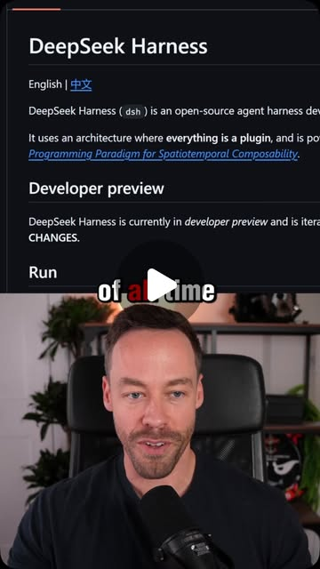

Instagram Reel

Comment “agent” to get all my Claude code guides + skills
video transcript (enriched by ClaudeClaw)
Summary
[CAPTION]
Comment “agent” to get all my Claude code guides + skills
[VIDEO]
So the brand new Deep Seq Harness is the fastest growing GitHub repo of all time. And here's how you can set it up.
[CAPTION]
Comment “agent” to get all my Claude code guides + skills
[VIDEO]
So the brand new Deep Seq Harness is the fastest growing GitHub repo of all time. And here's how you can set it up. So head to its GitHub page. You can find it just by searching for Deep Seq Harness. It'll be the first thing that pops up. You're going to go down to run and you're going to copy this install command. You're then going to open up the terminal and just paste it in and run this command and it will install it for you. Now, once it's installed to actually run this, you just need to put in this command, which is DSH space web. It's then going to bring up the web UI for this harness. Now, this is completely open source, so we can use any model we want here. We can do local models. We don't have to do deep seek. And in order to set that up, you're just going to go down to the left and hit settings, head over to models, and then go to add provider. So you can just give it whatever provider you want and then insert your API key. I use open router because that gives me access to essentially every single model out there. Then you just come down here on the right and you select whatever model you want. And from here, it pretty much works like every other harness. You select your workspace. We have a few different modes. If you're just doing coding stuff, you're going to want to stick in standard mode, and then you have permissions right here. Now the real sell with the deep seek harness is that everything is a plugin. We can customize the actual plumbing of the harness itself in a way you just can't do with Cloud Code or Codex. And there is a huge exploding library of different Deep Seek Harness plugins. Now we do a whole deep dive into how this works and what I ultimately think about it compared to Cloud Code on my YouTube. So make sure to check that out if you want to know more.
View original on Instagram Reel →